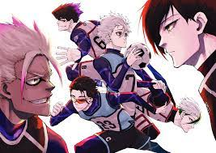
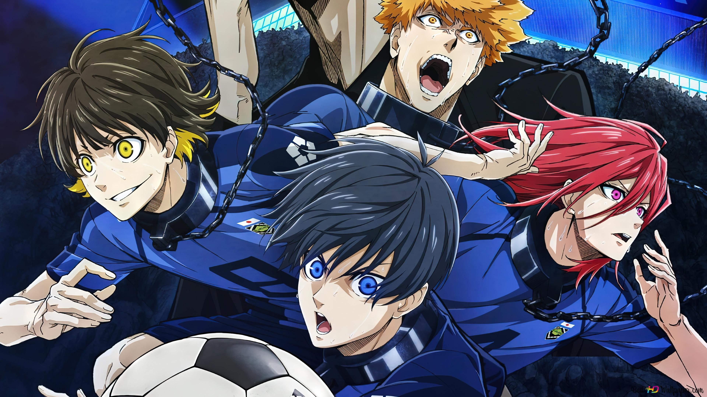
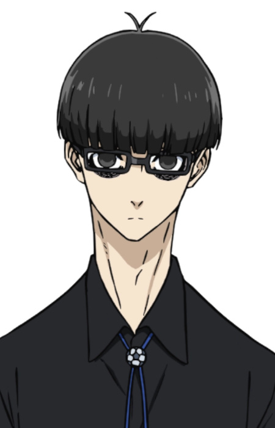

INTRODUCTION :
 |
The story begins with Japan's elimination from the 2018 FIFA World Cup, which prompts
the
Japanese Football Union to start a programme scouting high school players who will begin
training in preparation for the 2022 Cup. Isagi Youichi, a forward, receives an
invitation to
this programme soon after his team loses the chance to go to Nationals because he passed
to his
less-skilled teammate —who missed— without trying to make the game-changing goal by
himself.
Their coach will be Ego Jinpachi, who intends to “destroy Japanese loser football” by
introducing a radical new training regimen: isolate 300 young strikers in a prison-like
institution called “Blue Lock” and put them through rigorous training aimed at creating
“the
world's greatest egotist striker.”
|
MANGA :
|
Written by Muneyuki Kaneshiro and illustrated by Yusuke Nomura, Blue Lock started
in Kodansha's Weekly Shōnen Magazine on August 1, 2018. Kodansha has collected its
chapters into individual tankōbon volumes. The first volume was released on November 16,
2018. As of March 16, 2023, twenty-three volumes have been released.In January 2021,
Kodansha USA announced that they have licensed the manga for English digital release in
North America, starting on March 16, 2021. In January 2022, Kodansha USA announced
that they will release the manga in print.
|
 |
ANIME:
|  |
An anime television series adaptation was announced on
August 12, 2021.
The series is produced by Eight Bit and directed by Tetsuaki Watanabe, with Shunsuke
Ishikawa serving as assistant director, Taku Kishimoto overseeing the series' scripts,
Masaru Shindō providing the main character designs and serving as chief animation
director, Hisashi Tojima serving as chief action director, and Jun Murayama composing
the music. It ran for 24 episodes. The series aired from October 9, 2022 to March
26, 2023 on TV Asahi's NUMAnimation block.
|
CREATOR :
|
Ego at first glance, is an ambitious and overly confident man; beneath that ambition
however, is something even more sinister as he puts the emphasis in “ego” as he is shown
to be an extremely egotistical, cruel, and self-serving man, seeing teamwork and
“putting your teammates before yourself” to the equivalent of being “second-rate.” He
never wastes an opportunity to tell his players the cold truth about themselves and
their reality, either seeping them into further despair or inspiring them with his
coldhearted truth.
|
 |